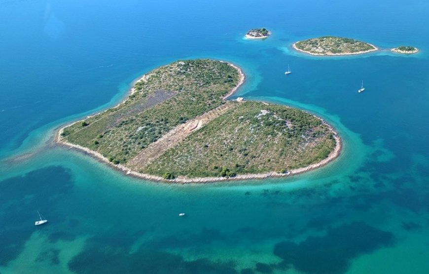

Legenda o imenu grada
Postoje različite legende o tome kako je grad dobio svoje ime. Jedna od legendi kaže da se grad zove po kuli (hrvatski: "turnj") koja se nekada nalazila u gradu i koja je bila dio obrambenog sustava.
Grad kroz povijest:
Turnj je tijekom svoje povijesti bio pod vlašću mnogih različitih vladara, uključujući Rimljane, Bizantince, Hrvate, Mlečane i Osmanlije. Grad je bio važno mjesto tijekom raznih ratova i sukoba, a danas su još uvijek vidljivi ostaci povijesnih građevina i spomenika iz različitih vremenskih razdoblja.
Otok ljubavi
U blizini grada nalazi se otok Galešnjak, koji ima oblik srca i smatra se jednim od najromantičnijih mjesta na svijetu.
Ove su zanimljivosti samo neki od razloga zašto vrijedi posjetiti grad Turnj. Bez obzira na to jeste li ljubitelj povijesti, prirode, hrane ili samo želite opuštajući odmor na moru, Turnj nudi mnoge
